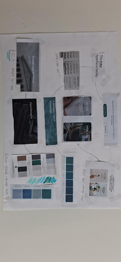

Een moodboard is een collectie van images, designs, patronen en tekst. Moodboards worden veelvuldig gebruikt in diverse toepassingen van visuele kunst, waaronder branding, grafisch ontwerp, mode, film, industrieel ontwerp en interieurontwerp. Voor het maken van een website over het maken van een website is een moodboard handig om een kleurenpalet te testen en inspiratie foto’s te verzamelen.
Een moodboard kan gebruikt worden in UX UI context om met designs te spelen, kijken welke kleurcombinatie er fijn uitzien en helpen met het bepalen van een toon van de inhoud.
https://www.nngroup.com/articles/mood-boards/
Wanneer maak je een moodboard
Moodboards worden vroeg in het ontwerpproces van een nieuw product gebruikt, of wanneer een bestaand product ingrijpend wordt herzien. Ze kunnen bijvoorbeeld worden gemaakt tijdens de Define- of Ideate-fase in de design thinking-cyclus. Ze helpen om consensus te bereiken over de stijl van de visuals voordat ontwerpers aan prototypes beginnen

Zelf ontworpen moodboard
Mijn Moodboard
Mijn moodboard is fysiek gemaakt en bevat verschillende foto’s, kleurpaletten, fonts en ideeën van verschillende websites. Door de moodboard fysiek te maken kan ik puzzelen en het board aanraken wat helpt met het creatieve proces.
Het font dat uiteindelijk gekozen is voor mijn Hi-Fi Design is de Inter typeface family, de kleur stijl is een combinatie van groen en blauw dat professionaliteit uitstraalt (blauw) terwijl ook een hint van ICT heeft (PCB groen).